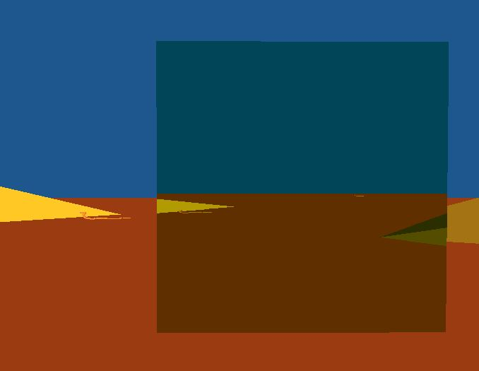
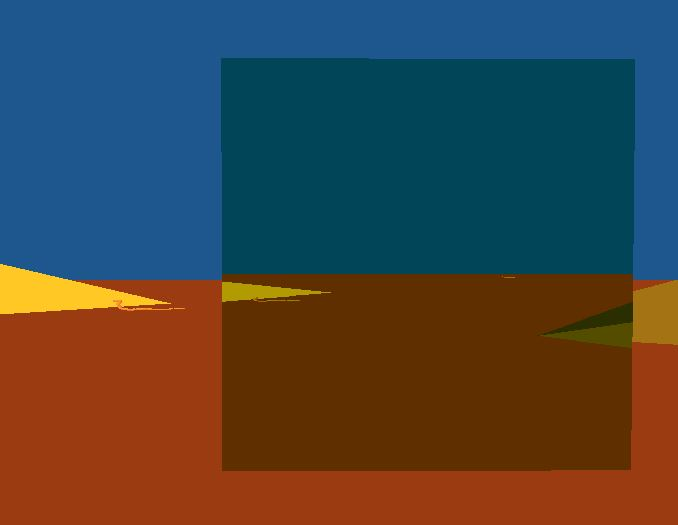
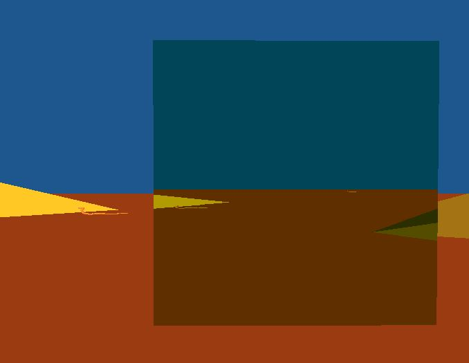

This project takes the texture rendering seen in Project 4, and expands on it. Similar to Project 4, the user uses the WASD keys and mouse to move and look around the world. However, instead of using Project 4's mirror, this project sets up a scene with 4 portals that make a box (no bottom or top faces). The portals are then paired, front face with back face, and left face with right face. Each face of the portal box displays the scene from the paired face's perspective, and will warp the camera to the paired face's location when walked through. Also among each pair is a transformation that can be seen by looking at the portal. This transformation, increasing or decreasing width or height, can be previewed by looking through the portal. By walking through a portal, the previewed transformation is then applied to the world. This effect can be reversed by traveling through the portal pair in the opposite direction.
This project used and furthered understanding of a number of topics:
Along with the OpenGl callback functions for capturing keyboard and mouse input, this program implements a couple custom callback functions for teleporting the camera and rendering the scene from the different portal's perspectives. This allows all warp-detection and portal texture rendering to be done on a per-portal basis. By attatching these resource-intensive functions to the portals, I was able to optimize the portal box rendering significantly (see Optimizaiton below).
Buidling off of the single texture rendering done in the image processing lab and Project 4, this program renders and keeps track of multiple different textures, one for each portal face. This requires keeping track of multiple frame buffers, depth buffers, and texture buffers, and making sure each is bound and attatched correctly before rendering a texture.
The portals will display the result of a transform on a piece of the scene, before it is applied to the entire scene. This allows the user to pick which transforms they want to apply, and gives them a little more of an idea of the effect that it will have before applying it to the entire scene. Previously, we hadn't designed anything that would give a preview like this. Instead, we would apply transforms to the entire scene, and view the results after the transformation.

The picture on the left shows the view of the user's camera looking into a portal with a scaling transformation. The transformation is previewed by the portal, allowing the user to see what the world would look like with the transform applied. The center image shows the user's view immediately after entering the scaling portal, with the transformation applied to the world. The image on the right shows the user once again at the same portal, but with the transformation applied and a preview of the world with the transform applied a second time.
As each portal requires rendering the scene from the portal's perspective into a texture, adding many portals can be detrimental to performance. This slowdown can be seen by adding as few as 2 pairs for a single box. In order to help counteract this slowdown, the portal rendering was optimized to "cull" the portals not directly visible to the user's camera. Culling the occluded portals allows the program to avoid running the resource-intensive functions of warp-detection and texture rendering, as they are run by the portal via callbacks. Therefore, by culling the occluded portals, there is a significant framerate improvement while running the program, and the portal box still looks like a full box.
To see this in action, change SHOW_REVERSE from 0 to 1 in the PortalBox.cpp. This will force the directly visible portals to no longer render, and the previously unrendered(occluded) portals to start rendering. The picture on the left shows the normal view for the optimized rendering, showing only the front faces. The picture on the right shows this reversed version where only the normally occluded portals are rendered.